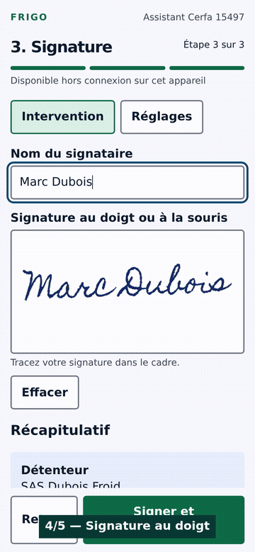

Le Cerfa 15497 signé sur chantier, le BSFF déjà sur TrackDéchets.
Vos techniciens saisissent une fois, sur le téléphone, même sans réseau. Le bordereau part sur TrackDéchets avec votre compte, le bilan F-Gas se construit tout seul, l'archivage 5 ans est fait.

Le parcours en 10 secondes : saisie → pesée → signature au doigt → fiche PDF. Ouvrir l'application
29 € HT/ mois par entreprise · techniciens illimités
Prix concurrents relevés en octobre 2026 sur leurs pages tarifs publiques.
Ce que fait l'outil
Cerfa 15497 pré-rempli avec vos équipements, signé sur l'écran du client.
Fonctionne hors réseau : sous-sol, local technique, chambre froide.
BSFF poussé sur l'API TrackDéchets avec le jeton de votre entreprise.
Bilan F-Gas annuel prêt pour l'organisme qui renouvelle votre attestation de capacité.
Archivage 5 ans, export PDF en cas de contrôle.
Ce qu'il ne fait pas
Pas de devis, pas de facturation, pas de planning : ce n'est pas un ERP.
Pas de matériel imposé, pas de tablette louée, pas d'engagement.
Pas de calcul de charge thermique ni de dimensionnement.
Statut, sans détour : le produit est en construction. Trois entreprises pilotes le construisent avec nous — 29 € le premier mois, payés d'avance, remboursés si l'outil ne fait pas gagner de temps sur chantier.
Le Cerfa reste signé par le détenteur de l'attestation de capacité : l'outil prépare et archive, il ne se substitue pas à votre responsabilité.